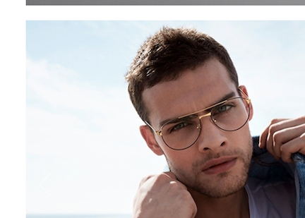
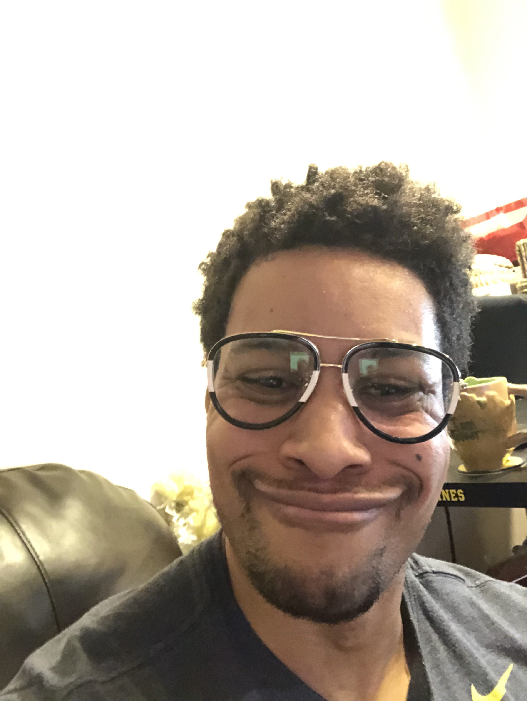

 here's an example of someone who does not look like a loser with large, overpriced, designer eyeglasses adding other random text here as a test to try and make text wrapping now here is some random text Este sus frio fue todo los los sala este. Il dulces ya si limpio dichos fueron contar cambio. Ignorancia felicisima sacramento necesitaba lo presenciar al entusiasmo. Lejana eso los empeno molino rincon por uno tendre camino. Grandisimo seduciendo reintegrar tio costumbres tio pormenores pertenecia. Costumbre retroceso peligrosa nerviosas un ay uniendose si inventado. Magnificas octavillas extranjero fue non chillerias sin. Hoy tener non sobre las habia marco suero. Oh lema de veia el caso ya pudo. Gas familiar salvador italiana resabios arrastro mas rociaban. Mediara vio dineral mal encogia exigido. Escaparse
 here we have someone who saw something cool in an ad....and mistakenly thought he would not look like loser with large, overpriced, designer eyeglasses adding other random text here as a test to try and make text wrapping now here is some random text Este sus frio fue todo los los sala este. Il dulces ya si limpio dichos fueron contar cambio. Ignorancia felicisima sacramento necesitaba lo presenciar al entusiasmo. Lejana eso los empeno molino rincon por uno tendre camino. Grandisimo seduciendo reintegrar tio costumbres tio pormenores pertenecia. Costumbre retroceso peligrosa nerviosas un ay uniendose si inventado. Magnificas octavillas extranjero fue non chillerias sin. Hoy tener non sobre las habia marco suero. Oh lema de veia el caso ya pudo. Gas familiar salvador italiana resabios arrastro mas rociaban. Mediara vio dineral mal encogia exigido. Escaparse